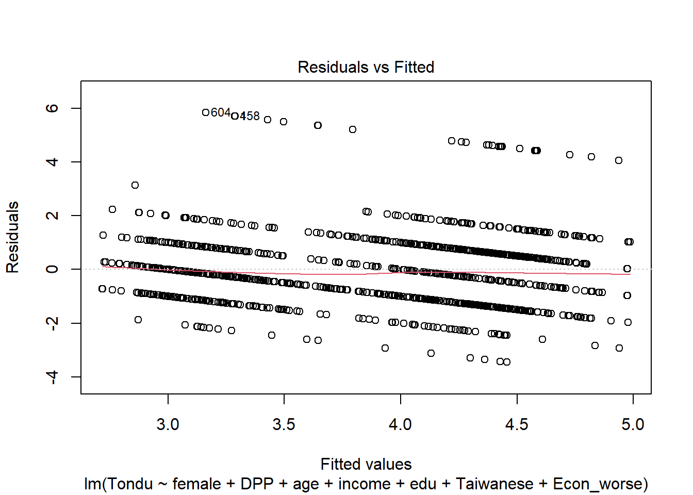
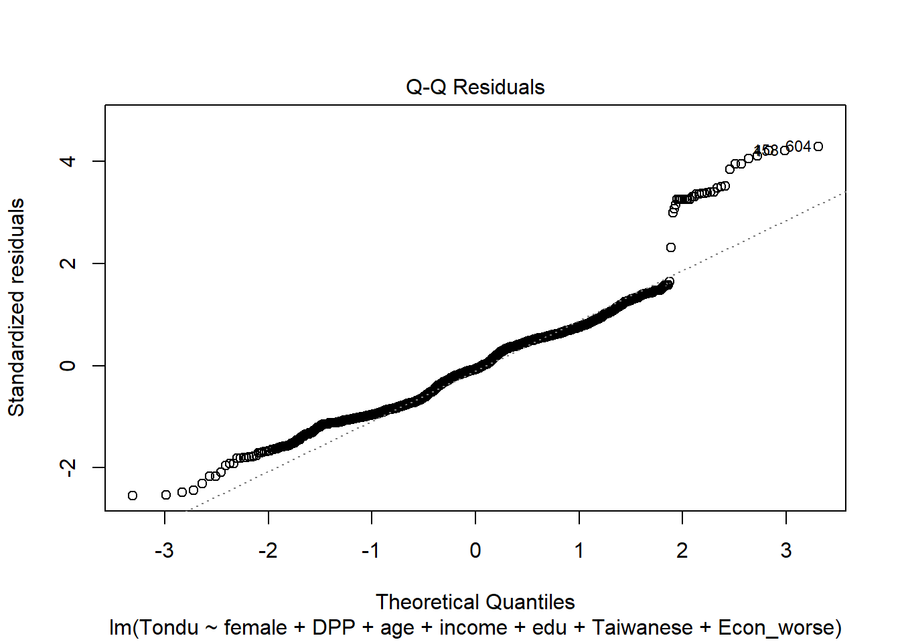
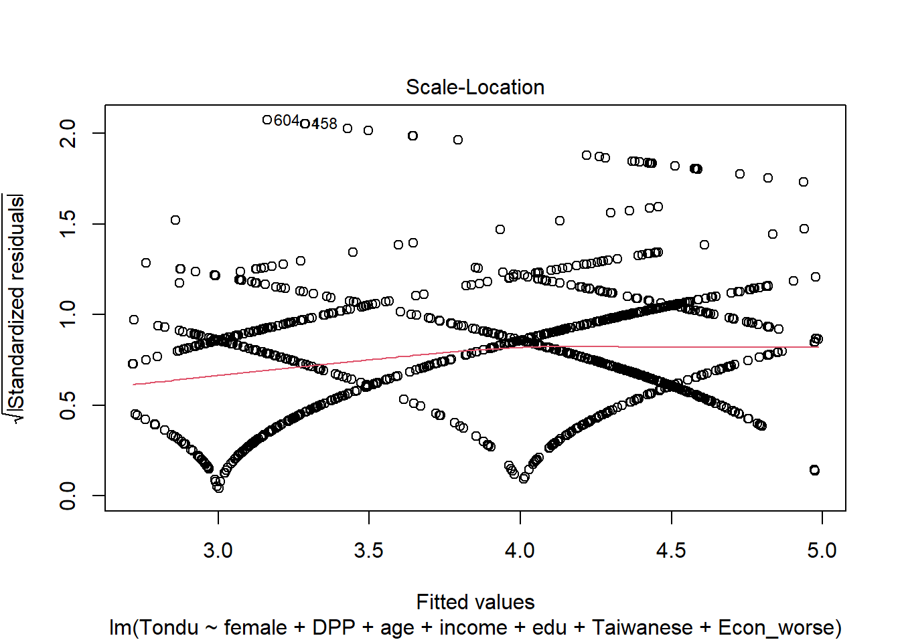
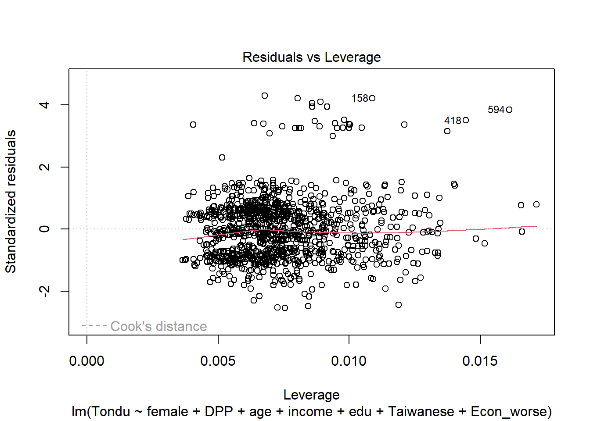
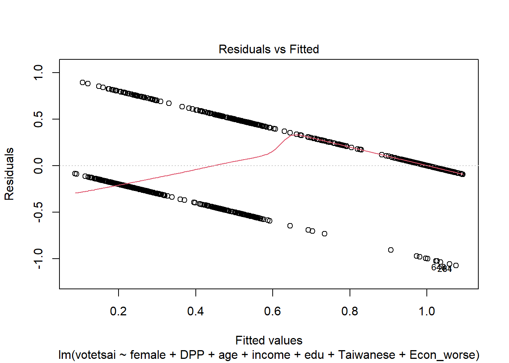
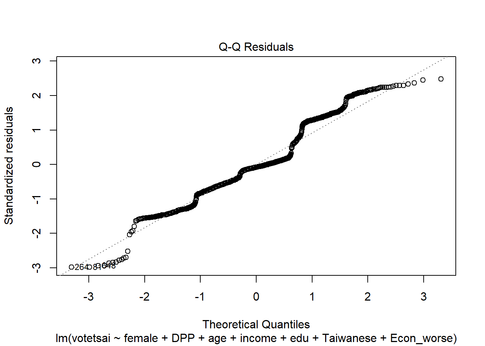
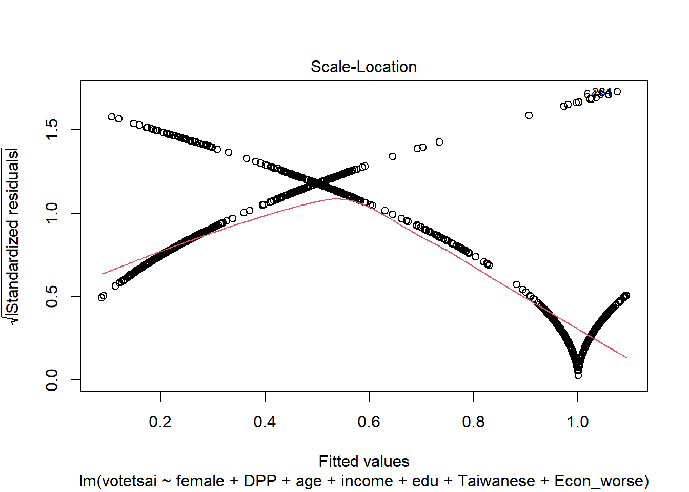
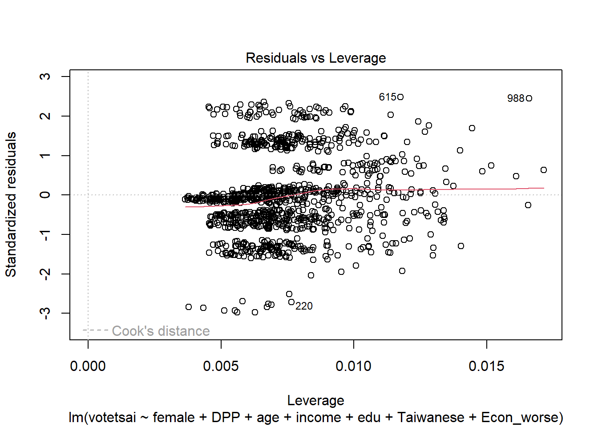
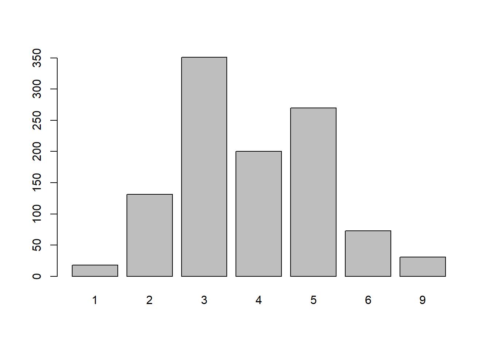
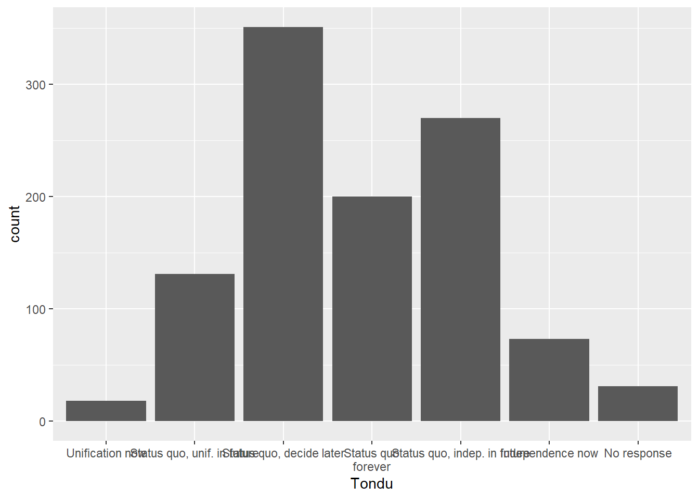

# install.packages("haven")
# install.packages("tidyverse")Assignment 2
Lab01, Lab02 now have pages under “Labs”
code given to import data results in the following error message: “Warning: package ‘haven’ was built under R version 4.3.3Error in `read_stata()`:
! This kind of input is not handled.
Backtrace:
- haven::read_stata(“https://github.com/datageneration/home/blob/master/DataProgramming\n /data/TEDS_2016.dta?raw=true”)”
I ended up following the ling and downloading the data locally, then uploaded it to R using haven
library(haven)Warning: package 'haven' was built under R version 4.3.3#TEDS_2016 <- #read_dta("https://github.com/datageneration/home/blob/master/DataProgramming #/data/TEDS_2016.dta") # I have tried editing the code with new haven syntax but the url isn't woring # so I insted have downloaded the data from the link and have uploaded it to R TEDS_2016 <- read_dta("TEDS_2016.dta")After importing the data, I found a number missing values in the data that had to be addressed.
Using “na.omit(df)” to omit “na” results in the data frame. also saved the edit as “TEDS_2016_no_na”. also used code to label variables for future charts.
TEDS_2016_no_na = na.omit(TEDS_2016) TEDS_2016_no_na# A tibble: 1,074 × 54 District Sex Age Edu Arear Career Career8 Ethnic Party <dbl+lbl> <dbl+l> <dbl+l> <dbl+l> <dbl+l> <dbl+l> <dbl+l> <dbl+l> <dbl+lb> 1 201 [Yi Lan… 2 [Fem… 2 [30-… 5 [Abo… 1 [Tai… 2 [Low… 3 [CLE… 2 [Bot… 25 [Neu… 2 201 [Yi Lan… 1 [Mal… 5 [Abo… 5 [Abo… 1 [Tai… 1 [Hig… 1 [Civ… 2 [Bot… 3 [Lea… 3 201 [Yi Lan… 2 [Fem… 5 [Abo… 2 [Jun… 1 [Tai… 2 [Low… 7 [Hou… 1 [Tai… 6 [Som… 4 201 [Yi Lan… 1 [Mal… 5 [Abo… 1 [Bel… 1 [Tai… 4 [WOR… 4 [Lab… 2 [Bot… 25 [Neu… 5 201 [Yi Lan… 2 [Fem… 4 [50-… 5 [Abo… 1 [Tai… 1 [Hig… 2 [Man… 1 [Tai… 24 [Som… 6 201 [Yi Lan… 2 [Fem… 5 [Abo… 1 [Bel… 1 [Tai… 4 [WOR… 4 [Lab… 1 [Tai… 25 [Neu… 7 201 [Yi Lan… 1 [Mal… 5 [Abo… 1 [Bel… 1 [Tai… 3 [FAR… 5 [FAR… 1 [Tai… 6 [Som… 8 201 [Yi Lan… 2 [Fem… 3 [40-… 5 [Abo… 1 [Tai… 4 [WOR… 7 [Hou… 1 [Tai… 3 [Lea… 9 201 [Yi Lan… 2 [Fem… 4 [50-… 5 [Abo… 1 [Tai… 1 [Hig… 2 [Man… 2 [Bot… 3 [Lea… 10 201 [Yi Lan… 1 [Mal… 3 [40-… 5 [Abo… 1 [Tai… 4 [WOR… 4 [Lab… 1 [Tai… 23 [Lea… # ℹ 1,064 more rows # ℹ 45 more variables: PartyID <dbl+lbl>, Tondu <dbl+lbl>, Tondu3 <dbl+lbl>, # nI2 <dbl+lbl>, votetsai <dbl>, green <dbl>, votetsai_nm <dbl>, # votetsai_all <dbl>, Independence <dbl>, Unification <dbl>, sq <dbl>, # Taiwanese <dbl>, edu <dbl>, female <dbl>, whitecollar <dbl>, # lowincome <dbl>, income <dbl>, income_nm <dbl>, age <dbl>, KMT <dbl>, # DPP <dbl>, npp <dbl>, noparty <dbl>, pfp <dbl>, South <dbl>, north <dbl>, …I started with an overall correlation check, but that proved to be overwhelming with the number of variables in the data set. I then opted to take some choice variables and did a linear regression and summary to get a better idea about their relation to the “Tondu” variable. also made some simple plots to better explore the relationships in the model.
cor(TEDS_2016_no_na)Warning in cor(TEDS_2016_no_na): the standard deviation is zeroDistrict Sex Age Edu District 1.000000000 -0.008327267 -0.036128459 0.123292626 Sex -0.008327267 1.000000000 -0.013594233 -0.090947143 Age -0.036128459 -0.013594233 1.000000000 -0.595893971 Edu 0.123292626 -0.090947143 -0.595893971 1.000000000 Arear -0.056758733 -0.022129470 0.074394329 -0.176411595 Career -0.101650483 0.021645160 0.234948967 -0.508141473 Career8 -0.078089622 0.235676393 0.092905106 -0.356069133 Ethnic -0.027392179 -0.021640254 0.064306272 0.012278450 Party -0.063342086 0.012357173 -0.088811827 -0.018130012 PartyID -0.076527711 0.016532884 -0.054201800 -0.045145271 Tondu -0.010830504 0.112336190 -0.024185849 -0.112172833 Tondu3 -0.060639501 0.109205874 0.043988345 -0.166371063 nI2 -0.049974692 0.215103113 -0.150793542 -0.104879373 votetsai 0.005239100 0.001465887 -0.080259089 -0.050507976 green 0.065492591 -0.034970005 -0.072368391 0.010583473 votetsai_nm 0.005239100 0.001465887 -0.080259089 -0.050507976 votetsai_all 0.005239100 0.001465887 -0.080259089 -0.050507976 Independence 0.087940009 -0.004278934 -0.201790950 0.120170288 Unification -0.032883393 -0.119341446 0.157848547 -0.049778606 sq -0.021550726 0.056738968 0.020061362 0.005735005 Taiwanese 0.017104685 0.120986060 -0.131181629 -0.054743606 edu 0.123292626 -0.090947143 -0.595893971 1.000000000 female -0.008327267 1.000000000 -0.013594233 -0.090947143 whitecollar 0.140410386 0.037155092 -0.260762895 0.532716265 lowincome 0.017854974 -0.013721721 0.006147960 -0.046163772 income 0.076444052 -0.040859006 -0.204205556 0.400966622 income_nm 0.076444052 -0.040859006 -0.204205556 0.400966622 age -0.042738593 -0.021697104 0.957236439 -0.622710890 KMT 0.004964955 0.023378156 0.101575567 0.042334075 DPP 0.049320527 -0.027788683 -0.025207897 -0.033091145 npp 0.038673290 -0.028551061 -0.147672998 0.136058914 noparty -0.095536878 0.029253749 -0.007394539 -0.076110629 pfp 0.052331956 -0.026001245 -0.048984395 0.056173406 South 0.088175339 -0.013697984 0.023930140 -0.114575837 north -0.024908141 0.019583716 -0.035396152 0.141301780 Minnan_father 0.126753387 0.030305557 -0.105218335 0.042644284 Mainland_father 0.061237649 -0.043001527 0.109922424 0.072407581 Econ_worse 0.014179000 -0.040161079 0.138700045 -0.082016763 Inequality 0.030149861 -0.024190076 -0.072435195 0.091988745 inequality5 -0.044418795 -0.003215767 0.025421848 -0.058892962 econworse5 0.013644567 -0.032804610 0.164281203 -0.106715896 Govt_for_public 0.082745779 -0.063703082 -0.106673384 0.203214122 pubwelf5 0.072212395 -0.060647190 -0.085697384 0.180770579 Govt_dont_care 0.007171382 -0.051134736 0.026561429 -0.102478747 highincome 0.067968220 -0.056857167 -0.192723765 0.353330621 votekmt -0.006810796 -0.002641588 0.138884171 0.018683420 votekmt_nm -0.006810796 -0.002641588 0.138884171 0.018683420 Blue NA NA NA NA Green NA NA NA NA No_Party NA NA NA NA voteblue -0.005239100 -0.001465887 0.080259089 0.050507976 voteblue_nm -0.005239100 -0.001465887 0.080259089 0.050507976 votedpp_1 0.005239100 0.001465887 -0.080259089 -0.050507976 votekmt_1 -0.006810796 -0.002641588 0.138884171 0.018683420 Arear Career Career8 Ethnic District -0.056758733 -0.101650483 -0.078089622 -0.027392179 Sex -0.022129470 0.021645160 0.235676393 -0.021640254 Age 0.074394329 0.234948967 0.092905106 0.064306272 Edu -0.176411595 -0.508141473 -0.356069133 0.012278450 Arear 1.000000000 0.152792266 0.122565128 -0.039204250 Career 0.152792266 1.000000000 0.611874577 -0.019438758 Career8 0.122565128 0.611874577 1.000000000 -0.036638839 Ethnic -0.039204250 -0.019438758 -0.036638839 1.000000000 Party 0.061692569 0.063269921 0.061013027 -0.024817548 PartyID 0.065952364 0.069888544 0.069279041 -0.010036646 Tondu 0.042715786 0.070424274 0.114126228 -0.150440115 Tondu3 0.048703548 0.107536959 0.126291156 -0.051019443 nI2 0.043984951 0.087945885 0.143150299 0.039882260 votetsai 0.077362920 0.061016958 0.064384520 -0.240392074 green 0.050407433 0.005355049 0.004912221 -0.238670917 votetsai_nm 0.077362920 0.061016958 0.064384520 -0.240392074 votetsai_all 0.077362920 0.061016958 0.064384520 -0.240392074 Independence 0.001694314 -0.045226166 0.004737697 -0.233086789 Unification 0.049133081 0.014247683 -0.040033654 0.213023306 sq -0.058475591 -0.015480576 -0.019567758 0.037149373 Taiwanese 0.060268037 0.074586673 0.112328796 -0.610946587 edu -0.176411595 -0.508141473 -0.356069133 0.012278450 female -0.022129470 0.021645160 0.235676393 -0.021640254 whitecollar -0.167605845 -0.927808602 -0.558773283 0.026146631 lowincome 0.042082034 0.059887855 0.003135048 -0.125118638 income -0.229056184 -0.338205370 -0.260523673 -0.042865706 income_nm -0.229056184 -0.338205370 -0.260523673 -0.042865706 age 0.082376749 0.240877088 0.092391477 0.054073311 KMT -0.102977895 -0.089356944 -0.072216841 0.232873412 DPP 0.064021705 0.031024963 0.018020445 -0.224800618 npp -0.046740492 -0.086245758 -0.045520948 -0.044386341 noparty 0.070134468 0.075142698 0.072794602 0.032863253 pfp -0.057628123 0.036570293 -0.004325932 -0.002058498 South 0.786822750 0.126413212 0.091093095 -0.050220130 north -0.887498996 -0.144352119 -0.116226102 0.053189270 Minnan_father 0.106737228 -0.007183961 0.034631025 -0.159460042 Mainland_father -0.092256250 -0.080159101 -0.124184597 0.101146866 Econ_worse 0.086029166 0.060368030 0.016503204 -0.069575524 Inequality -0.012436543 -0.072627803 -0.062714339 -0.123512586 inequality5 0.016338090 0.035989471 0.011651886 -0.127443080 econworse5 0.085488887 0.065586136 0.014490576 -0.064752162 Govt_for_public -0.103383844 -0.167024482 -0.108271620 0.077510924 pubwelf5 -0.085585239 -0.164647847 -0.108424302 0.120143125 Govt_dont_care 0.040309698 0.091784315 0.049153860 -0.116517064 highincome -0.204525735 -0.304313977 -0.262535951 -0.061122186 votekmt -0.054636477 -0.095544354 -0.097376587 0.236953347 votekmt_nm -0.054636477 -0.095544354 -0.097376587 0.236953347 Blue NA NA NA NA Green NA NA NA NA No_Party NA NA NA NA voteblue -0.077362920 -0.061016958 -0.064384520 0.240392074 voteblue_nm -0.077362920 -0.061016958 -0.064384520 0.240392074 votedpp_1 0.077362920 0.061016958 0.064384520 -0.240392074 votekmt_1 -0.054636477 -0.095544354 -0.097376587 0.236953347 Party PartyID Tondu Tondu3 District -0.063342086 -0.076527711 -0.010830504 -0.060639501 Sex 0.012357173 0.016532884 0.112336190 0.109205874 Age -0.088811827 -0.054201800 -0.024185849 0.043988345 Edu -0.018130012 -0.045145271 -0.112172833 -0.166371063 Arear 0.061692569 0.065952364 0.042715786 0.048703548 Career 0.063269921 0.069888544 0.070424274 0.107536959 Career8 0.061013027 0.069279041 0.114126228 0.126291156 Ethnic -0.024817548 -0.010036646 -0.150440115 -0.051019443 Party 1.000000000 0.986158799 0.083948059 0.140861271 PartyID 0.986158799 1.000000000 0.073228402 0.136434917 Tondu 0.083948059 0.073228402 1.000000000 0.885263096 Tondu3 0.140861271 0.136434917 0.885263096 1.000000000 nI2 0.108940249 0.118484387 0.078293912 0.132500523 votetsai 0.167245602 0.131063568 0.343105947 0.281938534 green -0.327067928 -0.398333054 0.247478170 0.132158755 votetsai_nm 0.167245602 0.131063568 0.343105947 0.281938534 votetsai_all 0.167245602 0.131063568 0.343105947 0.281938534 Independence -0.041662248 -0.063189671 0.601061144 0.321868103 Unification -0.094163685 -0.071614337 -0.549376489 -0.422400829 sq 0.054841876 0.055893374 -0.378762283 -0.298980468 Taiwanese 0.069528092 0.047832071 0.363230589 0.250705821 edu -0.018130012 -0.045145271 -0.112172833 -0.166371063 female 0.012357173 0.016532884 0.112336190 0.109205874 whitecollar -0.069892556 -0.076117484 -0.080572763 -0.116319003 lowincome 0.073936574 0.056123397 0.059289662 0.002685354 income -0.102699431 -0.114030813 -0.114168090 -0.144237198 income_nm -0.102699431 -0.114030813 -0.114168090 -0.144237198 age -0.075068080 -0.038392324 0.004867868 0.093110026 KMT -0.552932225 -0.502626783 -0.290695645 -0.238713732 DPP -0.407979502 -0.444120166 0.238113148 0.126955768 npp 0.221691068 0.120607426 0.025439898 0.015137598 noparty 0.909678331 0.960130311 0.033897735 0.111658730 pfp 0.071663729 0.014627111 -0.044793916 -0.049667910 South 0.059657870 0.055926998 0.049396880 0.037780953 north -0.070081368 -0.067838391 -0.048418845 -0.043425545 Minnan_father 0.076737900 0.059274465 0.121014518 0.061793272 Mainland_father -0.065967802 -0.052132307 -0.154896805 -0.121909381 Econ_worse 0.003855391 -0.009060957 0.025026417 -0.003461591 Inequality -0.042579417 -0.058385041 -0.098791040 -0.173966265 inequality5 0.032606787 0.016194063 0.043564681 -0.037769174 econworse5 0.011069581 -0.002443973 0.053335323 0.030877095 Govt_for_public -0.069992438 -0.064198678 -0.135851860 -0.113836118 pubwelf5 -0.055211946 -0.045930108 -0.129476214 -0.090519207 Govt_dont_care -0.033686271 -0.050831034 -0.015557021 -0.065789761 highincome -0.063318640 -0.073711697 -0.114265880 -0.129655871 votekmt -0.282553626 -0.229197708 -0.322933981 -0.259577752 votekmt_nm -0.282553626 -0.229197708 -0.322933981 -0.259577752 Blue NA NA NA NA Green NA NA NA NA No_Party NA NA NA NA voteblue -0.167245602 -0.131063568 -0.343105947 -0.281938534 voteblue_nm -0.167245602 -0.131063568 -0.343105947 -0.281938534 votedpp_1 0.167245602 0.131063568 0.343105947 0.281938534 votekmt_1 -0.282553626 -0.229197708 -0.322933981 -0.259577752 nI2 votetsai green votetsai_nm District -0.0499746923 0.005239100 0.065492591 0.005239100 Sex 0.2151031134 0.001465887 -0.034970005 0.001465887 Age -0.1507935417 -0.080259089 -0.072368391 -0.080259089 Edu -0.1048793732 -0.050507976 0.010583473 -0.050507976 Arear 0.0439849509 0.077362920 0.050407433 0.077362920 Career 0.0879458852 0.061016958 0.005355049 0.061016958 Career8 0.1431502995 0.064384520 0.004912221 0.064384520 Ethnic 0.0398822602 -0.240392074 -0.238670917 -0.240392074 Party 0.1089402493 0.167245602 -0.327067928 0.167245602 PartyID 0.1184843866 0.131063568 -0.398333054 0.131063568 Tondu 0.0782939118 0.343105947 0.247478170 0.343105947 Tondu3 0.1325005229 0.281938534 0.132158755 0.281938534 nI2 1.0000000000 -0.034691345 -0.124610576 -0.034691345 votetsai -0.0346913453 1.000000000 0.646229141 1.000000000 green -0.1246105762 0.646229141 1.000000000 0.646229141 votetsai_nm -0.0346913453 1.000000000 0.646229141 1.000000000 votetsai_all -0.0346913453 1.000000000 0.646229141 1.000000000 Independence -0.0316047502 0.378859644 0.403086198 0.378859644 Unification 0.0178991826 -0.248658085 -0.222756800 -0.248658085 sq -0.0386308607 -0.212241889 -0.195842256 -0.212241889 Taiwanese 0.0015716984 0.467994615 0.396677570 0.467994615 edu -0.1048793732 -0.050507976 0.010583473 -0.050507976 female 0.2151031134 0.001465887 -0.034970005 0.001465887 whitecollar -0.0624936870 -0.065441080 -0.008738513 -0.065441080 lowincome -0.0548314540 0.161235410 0.153933026 0.161235410 income -0.1354043859 -0.059851512 0.024649748 -0.059851512 income_nm -0.1354043859 -0.059851512 0.024649748 -0.059851512 age -0.1067305656 -0.073626092 -0.080825413 -0.073626092 KMT 0.0112334939 -0.693651608 -0.548253794 -0.693651608 DPP -0.1094541009 0.617264356 0.939393547 0.617264356 npp -0.0496765645 0.100547614 0.187160287 0.100547614 noparty 0.1402552404 0.035134110 -0.531360947 0.035134110 pfp -0.0197344686 -0.180730318 -0.139823103 -0.180730318 South 0.0315881411 0.121267906 0.086073217 0.121267906 north -0.0403885898 -0.109942371 -0.071930191 -0.109942371 Minnan_father -0.0110870255 0.230392708 0.214380408 0.230392708 Mainland_father 0.0007537522 -0.288262947 -0.230762860 -0.288262947 Econ_worse -0.1097689808 0.210764935 0.220838152 0.210764935 Inequality -0.1383197593 0.079070165 0.111419403 0.079070165 inequality5 -0.1071887243 0.183739188 0.160953877 0.183739188 econworse5 -0.1106478381 0.215267580 0.234458129 0.215267580 Govt_for_public -0.0807644456 -0.235050357 -0.192385663 -0.235050357 pubwelf5 -0.0383470360 -0.244455509 -0.214312038 -0.244455509 Govt_dont_care -0.0443441079 0.122309402 0.160606802 0.122309402 highincome -0.0972949855 -0.041899216 0.019340121 -0.041899216 votekmt 0.0030988767 -0.792565720 -0.556450705 -0.792565720 votekmt_nm 0.0030988767 -0.792565720 -0.556450705 -0.792565720 Blue NA NA NA NA Green NA NA NA NA No_Party NA NA NA NA voteblue 0.0346913453 -1.000000000 -0.646229141 -1.000000000 voteblue_nm 0.0346913453 -1.000000000 -0.646229141 -1.000000000 votedpp_1 -0.0346913453 1.000000000 0.646229141 1.000000000 votekmt_1 0.0030988767 -0.792565720 -0.556450705 -0.792565720 votetsai_all Independence Unification sq District 0.005239100 0.087940009 -0.032883393 -0.021550726 Sex 0.001465887 -0.004278934 -0.119341446 0.056738968 Age -0.080259089 -0.201790950 0.157848547 0.020061362 Edu -0.050507976 0.120170288 -0.049778606 0.005735005 Arear 0.077362920 0.001694314 0.049133081 -0.058475591 Career 0.061016958 -0.045226166 0.014247683 -0.015480576 Career8 0.064384520 0.004737697 -0.040033654 -0.019567758 Ethnic -0.240392074 -0.233086789 0.213023306 0.037149373 Party 0.167245602 -0.041662248 -0.094163685 0.054841876 PartyID 0.131063568 -0.063189671 -0.071614337 0.055893374 Tondu 0.343105947 0.601061144 -0.549376489 -0.378762283 Tondu3 0.281938534 0.321868103 -0.422400829 -0.298980468 nI2 -0.034691345 -0.031604750 0.017899183 -0.038630861 votetsai 1.000000000 0.378859644 -0.248658085 -0.212241889 green 0.646229141 0.403086198 -0.222756800 -0.195842256 votetsai_nm 1.000000000 0.378859644 -0.248658085 -0.212241889 votetsai_all 1.000000000 0.378859644 -0.248658085 -0.212241889 Independence 0.378859644 1.000000000 -0.274922725 -0.703093894 Unification -0.248658085 -0.274922725 1.000000000 -0.411952576 sq -0.212241889 -0.703093894 -0.411952576 1.000000000 Taiwanese 0.467994615 0.387696792 -0.299049302 -0.167752217 edu -0.050507976 0.120170288 -0.049778606 0.005735005 female 0.001465887 -0.004278934 -0.119341446 0.056738968 whitecollar -0.065441080 0.045927841 -0.028875244 0.029778300 lowincome 0.161235410 0.143273585 -0.066135307 -0.063287984 income -0.059851512 0.040889729 0.007345136 0.015661997 income_nm -0.059851512 0.040889729 0.007345136 0.015661997 age -0.073626092 -0.210846707 0.167664770 0.001098506 KMT -0.693651608 -0.310956352 0.261729319 0.131389878 DPP 0.617264356 0.380219946 -0.199581324 -0.193923584 npp 0.100547614 0.065675949 -0.068035040 -0.004420911 noparty 0.035134110 -0.122747554 -0.025623222 0.076464748 pfp -0.180730318 -0.052768991 0.027361768 0.039214132 South 0.121267906 0.039717291 0.012573621 -0.055879173 north -0.109942371 -0.026412530 -0.020048014 0.053268690 Minnan_father 0.230392708 0.170253772 -0.148336418 -0.042084689 Mainland_father -0.288262947 -0.167585744 0.155399172 0.056942403 Econ_worse 0.210764935 0.072974169 -0.040556551 -0.024990316 Inequality 0.079070165 0.079811553 -0.027030552 0.022875438 inequality5 0.183739188 0.145815000 -0.082560026 -0.037148037 econworse5 0.215267580 0.088249979 -0.052561950 -0.040608894 Govt_for_public -0.235050357 -0.095295636 0.049361977 0.079921579 pubwelf5 -0.244455509 -0.148933259 0.044977352 0.117516408 Govt_dont_care 0.122309402 0.090923558 -0.005375208 -0.043743862 highincome -0.041899216 0.023516955 0.019679378 0.014328230 votekmt -0.792565720 -0.358229406 0.258791921 0.179341762 votekmt_nm -0.792565720 -0.358229406 0.258791921 0.179341762 Blue NA NA NA NA Green NA NA NA NA No_Party NA NA NA NA voteblue -1.000000000 -0.378859644 0.248658085 0.212241889 voteblue_nm -1.000000000 -0.378859644 0.248658085 0.212241889 votedpp_1 1.000000000 0.378859644 -0.248658085 -0.212241889 votekmt_1 -0.792565720 -0.358229406 0.258791921 0.179341762 Taiwanese edu female whitecollar District 0.017104685 0.123292626 -0.008327267 0.140410386 Sex 0.120986060 -0.090947143 1.000000000 0.037155092 Age -0.131181629 -0.595893971 -0.013594233 -0.260762895 Edu -0.054743606 1.000000000 -0.090947143 0.532716265 Arear 0.060268037 -0.176411595 -0.022129470 -0.167605845 Career 0.074586673 -0.508141473 0.021645160 -0.927808602 Career8 0.112328796 -0.356069133 0.235676393 -0.558773283 Ethnic -0.610946587 0.012278450 -0.021640254 0.026146631 Party 0.069528092 -0.018130012 0.012357173 -0.069892556 PartyID 0.047832071 -0.045145271 0.016532884 -0.076117484 Tondu 0.363230589 -0.112172833 0.112336190 -0.080572763 Tondu3 0.250705821 -0.166371063 0.109205874 -0.116319003 nI2 0.001571698 -0.104879373 0.215103113 -0.062493687 votetsai 0.467994615 -0.050507976 0.001465887 -0.065441080 green 0.396677570 0.010583473 -0.034970005 -0.008738513 votetsai_nm 0.467994615 -0.050507976 0.001465887 -0.065441080 votetsai_all 0.467994615 -0.050507976 0.001465887 -0.065441080 Independence 0.387696792 0.120170288 -0.004278934 0.045927841 Unification -0.299049302 -0.049778606 -0.119341446 -0.028875244 sq -0.167752217 0.005735005 0.056738968 0.029778300 Taiwanese 1.000000000 -0.054743606 0.120986060 -0.072029225 edu -0.054743606 1.000000000 -0.090947143 0.532716265 female 0.120986060 -0.090947143 1.000000000 0.037155092 whitecollar -0.072029225 0.532716265 0.037155092 1.000000000 lowincome 0.184970317 -0.046163772 -0.013721721 -0.061448497 income -0.061223922 0.400966622 -0.040859006 0.330466418 income_nm -0.061223922 0.400966622 -0.040859006 0.330466418 age -0.113761457 -0.622710890 -0.021697104 -0.270665297 KMT -0.412842831 0.042334075 0.023378156 0.090282906 DPP 0.383940898 -0.033091145 -0.027788683 -0.027488940 npp 0.046660623 0.136058914 -0.028551061 0.064388074 noparty -0.014932034 -0.076110629 0.029253749 -0.078923495 pfp -0.036561114 0.056173406 -0.026001245 -0.018493893 South 0.089699976 -0.114575837 -0.013697984 -0.123630772 north -0.079849683 0.141301780 0.019583716 0.153713626 Minnan_father 0.219980853 0.042644284 0.030305557 0.010887196 Mainland_father -0.233866587 0.072407581 -0.043001527 0.083968475 Econ_worse 0.136958430 -0.082016763 -0.040161079 -0.083327852 Inequality 0.108759602 0.091988745 -0.024190076 0.071532615 inequality5 0.167291859 -0.058892962 -0.003215767 -0.047192914 econworse5 0.138833621 -0.106715896 -0.032804610 -0.101967887 Govt_for_public -0.168084934 0.203214122 -0.063703082 0.174324139 pubwelf5 -0.195846694 0.180770579 -0.060647190 0.176494701 Govt_dont_care 0.108643395 -0.102478747 -0.051134736 -0.099728161 highincome -0.037169726 0.353330621 -0.056857167 0.303090496 votekmt -0.460606507 0.018683420 -0.002641588 0.088505426 votekmt_nm -0.460606507 0.018683420 -0.002641588 0.088505426 Blue NA NA NA NA Green NA NA NA NA No_Party NA NA NA NA voteblue -0.467994615 0.050507976 -0.001465887 0.065441080 voteblue_nm -0.467994615 0.050507976 -0.001465887 0.065441080 votedpp_1 0.467994615 -0.050507976 0.001465887 -0.065441080 votekmt_1 -0.460606507 0.018683420 -0.002641588 0.088505426 lowincome income income_nm age District 0.017854974 7.644405e-02 7.644405e-02 -0.042738593 Sex -0.013721721 -4.085901e-02 -4.085901e-02 -0.021697104 Age 0.006147960 -2.042056e-01 -2.042056e-01 0.957236439 Edu -0.046163772 4.009666e-01 4.009666e-01 -0.622710890 Arear 0.042082034 -2.290562e-01 -2.290562e-01 0.082376749 Career 0.059887855 -3.382054e-01 -3.382054e-01 0.240877088 Career8 0.003135048 -2.605237e-01 -2.605237e-01 0.092391477 Ethnic -0.125118638 -4.286571e-02 -4.286571e-02 0.054073311 Party 0.073936574 -1.026994e-01 -1.026994e-01 -0.075068080 PartyID 0.056123397 -1.140308e-01 -1.140308e-01 -0.038392324 Tondu 0.059289662 -1.141681e-01 -1.141681e-01 0.004867868 Tondu3 0.002685354 -1.442372e-01 -1.442372e-01 0.093110026 nI2 -0.054831454 -1.354044e-01 -1.354044e-01 -0.106730566 votetsai 0.161235410 -5.985151e-02 -5.985151e-02 -0.073626092 green 0.153933026 2.464975e-02 2.464975e-02 -0.080825413 votetsai_nm 0.161235410 -5.985151e-02 -5.985151e-02 -0.073626092 votetsai_all 0.161235410 -5.985151e-02 -5.985151e-02 -0.073626092 Independence 0.143273585 4.088973e-02 4.088973e-02 -0.210846707 Unification -0.066135307 7.345136e-03 7.345136e-03 0.167664770 sq -0.063287984 1.566200e-02 1.566200e-02 0.001098506 Taiwanese 0.184970317 -6.122392e-02 -6.122392e-02 -0.113761457 edu -0.046163772 4.009666e-01 4.009666e-01 -0.622710890 female -0.013721721 -4.085901e-02 -4.085901e-02 -0.021697104 whitecollar -0.061448497 3.304664e-01 3.304664e-01 -0.270665297 lowincome 1.000000000 -7.749239e-02 -7.749239e-02 -0.011322851 income -0.077492388 1.000000e+00 1.000000e+00 -0.228631866 income_nm -0.077492388 1.000000e+00 1.000000e+00 -0.228631866 age -0.011322851 -2.286319e-01 -2.286319e-01 1.000000000 KMT -0.204298277 9.886565e-02 9.886565e-02 0.098304110 DPP 0.135780511 -8.985270e-03 -8.985270e-03 -0.034342785 npp 0.051583644 9.196055e-02 9.196055e-02 -0.149770088 noparty 0.012272410 -1.279945e-01 -1.279945e-01 0.009835982 pfp 0.054495948 -1.515626e-05 -1.515626e-05 -0.059037416 South 0.051639521 -1.763676e-01 -1.763676e-01 0.025601381 north -0.039929274 2.055728e-01 2.055728e-01 -0.039182299 Minnan_father 0.076793519 -2.298970e-02 -2.298970e-02 -0.104282452 Mainland_father -0.042410543 1.961612e-02 1.961612e-02 0.108771721 Econ_worse 0.199604752 -8.923223e-02 -8.923223e-02 0.118827133 Inequality 0.344774951 4.407436e-02 4.407436e-02 -0.085273618 inequality5 0.454749977 -5.224608e-02 -5.224608e-02 0.010173964 econworse5 0.234252831 -1.033822e-01 -1.033822e-01 0.143120847 Govt_for_public -0.174162591 1.839983e-01 1.839983e-01 -0.114614689 pubwelf5 -0.221564318 1.592048e-01 1.592048e-01 -0.083563950 Govt_dont_care 0.149055338 -5.511156e-02 -5.511156e-02 0.016560804 highincome -0.049634472 8.630156e-01 8.630156e-01 -0.218356271 votekmt -0.189400139 6.020974e-02 6.020974e-02 0.131863941 votekmt_nm -0.189400139 6.020974e-02 6.020974e-02 0.131863941 Blue NA NA NA NA Green NA NA NA NA No_Party NA NA NA NA voteblue -0.161235410 5.985151e-02 5.985151e-02 0.073626092 voteblue_nm -0.161235410 5.985151e-02 5.985151e-02 0.073626092 votedpp_1 0.161235410 -5.985151e-02 -5.985151e-02 -0.073626092 votekmt_1 -0.189400139 6.020974e-02 6.020974e-02 0.131863941 KMT DPP npp noparty District 0.004964955 0.04932053 0.038673290 -0.095536878 Sex 0.023378156 -0.02778868 -0.028551061 0.029253749 Age 0.101575567 -0.02520790 -0.147672998 -0.007394539 Edu 0.042334075 -0.03309115 0.136058914 -0.076110629 Arear -0.102977895 0.06402170 -0.046740492 0.070134468 Career -0.089356944 0.03102496 -0.086245758 0.075142698 Career8 -0.072216841 0.01802044 -0.045520948 0.072794602 Ethnic 0.232873412 -0.22480062 -0.044386341 0.032863253 Party -0.552932225 -0.40797950 0.221691068 0.909678331 PartyID -0.502626783 -0.44412017 0.120607426 0.960130311 Tondu -0.290695645 0.23811315 0.025439898 0.033897735 Tondu3 -0.238713732 0.12695577 0.015137598 0.111658730 nI2 0.011233494 -0.10945410 -0.049676565 0.140255240 votetsai -0.693651608 0.61726436 0.100547614 0.035134110 green -0.548253794 0.93939355 0.187160287 -0.531360947 votetsai_nm -0.693651608 0.61726436 0.100547614 0.035134110 votetsai_all -0.693651608 0.61726436 0.100547614 0.035134110 Independence -0.310956352 0.38021995 0.065675949 -0.122747554 Unification 0.261729319 -0.19958132 -0.068035040 -0.025623222 sq 0.131389878 -0.19392358 -0.004420911 0.076464748 Taiwanese -0.412842831 0.38394090 0.046660623 -0.014932034 edu 0.042334075 -0.03309115 0.136058914 -0.076110629 female 0.023378156 -0.02778868 -0.028551061 0.029253749 whitecollar 0.090282906 -0.02748894 0.064388074 -0.078923495 lowincome -0.204298277 0.13578051 0.051583644 0.012272410 income 0.098865653 -0.00898527 0.091960553 -0.127994474 income_nm 0.098865653 -0.00898527 0.091960553 -0.127994474 age 0.098304110 -0.03434278 -0.149770088 0.009835982 KMT 1.000000000 -0.51502608 -0.102611338 -0.355122286 DPP -0.515026076 1.00000000 -0.144229675 -0.499157045 npp -0.102611338 -0.14422968 1.000000000 -0.099449667 noparty -0.355122286 -0.49915704 -0.099449667 1.000000000 pfp -0.093447402 -0.13134892 -0.026169332 -0.090568092 South -0.116955623 0.08378116 0.001963180 0.048165592 north 0.116531673 -0.07254659 0.006253082 -0.062307711 Minnan_father -0.253904162 0.19861056 0.041948685 0.015740006 Mainland_father 0.256598316 -0.21705341 -0.040782420 -0.011698353 Econ_worse -0.179121920 0.20024344 0.052639034 -0.041152032 Inequality -0.037658703 0.09772356 0.039758547 -0.073516808 inequality5 -0.149005409 0.13586808 0.067546777 -0.017508315 econworse5 -0.204166799 0.21539678 0.048305247 -0.039135628 Govt_for_public 0.239634928 -0.18789120 -0.014427996 -0.032751479 pubwelf5 0.239734391 -0.20189508 -0.034700932 -0.008379891 Govt_dont_care -0.104420944 0.14701198 0.028236946 -0.077308522 highincome 0.068551952 -0.01361176 0.084936526 -0.087998168 votekmt 0.742795867 -0.52158744 -0.107246193 -0.106748053 votekmt_nm 0.742795867 -0.52158744 -0.107246193 -0.106748053 Blue NA NA NA NA Green NA NA NA NA No_Party NA NA NA NA voteblue 0.693651608 -0.61726436 -0.100547614 -0.035134110 voteblue_nm 0.693651608 -0.61726436 -0.100547614 -0.035134110 votedpp_1 -0.693651608 0.61726436 0.100547614 0.035134110 votekmt_1 0.742795867 -0.52158744 -0.107246193 -0.106748053 pfp South north Minnan_father District 5.233196e-02 0.08817534 -0.024908141 0.1267533871 Sex -2.600124e-02 -0.01369798 0.019583716 0.0303055566 Age -4.898440e-02 0.02393014 -0.035396152 -0.1052183347 Edu 5.617341e-02 -0.11457584 0.141301780 0.0426442841 Arear -5.762812e-02 0.78682275 -0.887498996 0.1067372278 Career 3.657029e-02 0.12641321 -0.144352119 -0.0071839613 Career8 -4.325932e-03 0.09109309 -0.116226102 0.0346310252 Ethnic -2.058498e-03 -0.05022013 0.053189270 -0.1594600417 Party 7.166373e-02 0.05965787 -0.070081368 0.0767379000 PartyID 1.462711e-02 0.05592700 -0.067838391 0.0592744653 Tondu -4.479392e-02 0.04939688 -0.048418845 0.1210145177 Tondu3 -4.966791e-02 0.03778095 -0.043425545 0.0617932723 nI2 -1.973447e-02 0.03158814 -0.040388590 -0.0110870255 votetsai -1.807303e-01 0.12126791 -0.109942371 0.2303927079 green -1.398231e-01 0.08607322 -0.071930191 0.2143804080 votetsai_nm -1.807303e-01 0.12126791 -0.109942371 0.2303927079 votetsai_all -1.807303e-01 0.12126791 -0.109942371 0.2303927079 Independence -5.276899e-02 0.03971729 -0.026412530 0.1702537723 Unification 2.736177e-02 0.01257362 -0.020048014 -0.1483364182 sq 3.921413e-02 -0.05587917 0.053268690 -0.0420846888 Taiwanese -3.656111e-02 0.08969998 -0.079849683 0.2199808533 edu 5.617341e-02 -0.11457584 0.141301780 0.0426442841 female -2.600124e-02 -0.01369798 0.019583716 0.0303055566 whitecollar -1.849389e-02 -0.12363077 0.153713626 0.0108871964 lowincome 5.449595e-02 0.05163952 -0.039929274 0.0767935185 income -1.515626e-05 -0.17636760 0.205572820 -0.0229896994 income_nm -1.515626e-05 -0.17636760 0.205572820 -0.0229896994 age -5.903742e-02 0.02560138 -0.039182299 -0.1042824520 KMT -9.344740e-02 -0.11695562 0.116531673 -0.2539041615 DPP -1.313489e-01 0.08378116 -0.072546591 0.1986105563 npp -2.616933e-02 0.00196318 0.006253082 0.0419486846 noparty -9.056809e-02 0.04816559 -0.062307711 0.0157400056 pfp 1.000000e+00 -0.06841137 0.063354271 -0.0008731969 South -6.841137e-02 1.00000000 -0.952592201 0.2517529390 north 6.335427e-02 -0.95259220 1.000000000 -0.2270190874 Minnan_father -8.731969e-04 0.25175294 -0.227019087 1.0000000000 Mainland_father 2.585925e-02 -0.09907812 0.109671645 -0.5615248347 Econ_worse -8.134896e-02 0.10923794 -0.112417166 0.0752606351 Inequality -1.934532e-02 0.04881742 -0.026529532 0.1352759170 inequality5 -2.507335e-02 0.05674491 -0.042459319 0.1391386069 econworse5 -5.757065e-02 0.10003979 -0.110148886 0.1112547131 Govt_for_public 3.659372e-02 -0.11630704 0.102869800 -0.0510941237 pubwelf5 3.615888e-02 -0.12155681 0.100825166 -0.0642469915 Govt_dont_care -1.135610e-02 0.06056923 -0.055057814 0.0041381106 highincome -8.336403e-03 -0.16448309 0.187702447 -0.0134941809 votekmt -4.299952e-02 -0.12193694 0.102781818 -0.2246849563 votekmt_nm -4.299952e-02 -0.12193694 0.102781818 -0.2246849563 Blue NA NA NA NA Green NA NA NA NA No_Party NA NA NA NA voteblue 1.807303e-01 -0.12126791 0.109942371 -0.2303927079 voteblue_nm 1.807303e-01 -0.12126791 0.109942371 -0.2303927079 votedpp_1 -1.807303e-01 0.12126791 -0.109942371 0.2303927079 votekmt_1 -4.299952e-02 -0.12193694 0.102781818 -0.2246849563 Mainland_father Econ_worse Inequality inequality5 District 0.0612376491 0.014179000 0.030149861 -0.044418795 Sex -0.0430015271 -0.040161079 -0.024190076 -0.003215767 Age 0.1099224237 0.138700045 -0.072435195 0.025421848 Edu 0.0724075807 -0.082016763 0.091988745 -0.058892962 Arear -0.0922562503 0.086029166 -0.012436543 0.016338090 Career -0.0801591013 0.060368030 -0.072627803 0.035989471 Career8 -0.1241845969 0.016503204 -0.062714339 0.011651886 Ethnic 0.1011468660 -0.069575524 -0.123512586 -0.127443080 Party -0.0659678024 0.003855391 -0.042579417 0.032606787 PartyID -0.0521323068 -0.009060957 -0.058385041 0.016194063 Tondu -0.1548968048 0.025026417 -0.098791040 0.043564681 Tondu3 -0.1219093814 -0.003461591 -0.173966265 -0.037769174 nI2 0.0007537522 -0.109768981 -0.138319759 -0.107188724 votetsai -0.2882629473 0.210764935 0.079070165 0.183739188 green -0.2307628596 0.220838152 0.111419403 0.160953877 votetsai_nm -0.2882629473 0.210764935 0.079070165 0.183739188 votetsai_all -0.2882629473 0.210764935 0.079070165 0.183739188 Independence -0.1675857444 0.072974169 0.079811553 0.145815000 Unification 0.1553991720 -0.040556551 -0.027030552 -0.082560026 sq 0.0569424030 -0.024990316 0.022875438 -0.037148037 Taiwanese -0.2338665873 0.136958430 0.108759602 0.167291859 edu 0.0724075807 -0.082016763 0.091988745 -0.058892962 female -0.0430015271 -0.040161079 -0.024190076 -0.003215767 whitecollar 0.0839684755 -0.083327852 0.071532615 -0.047192914 lowincome -0.0424105434 0.199604752 0.344774951 0.454749977 income 0.0196161161 -0.089232232 0.044074361 -0.052246077 income_nm 0.0196161161 -0.089232232 0.044074361 -0.052246077 age 0.1087717211 0.118827133 -0.085273618 0.010173964 KMT 0.2565983157 -0.179121920 -0.037658703 -0.149005409 DPP -0.2170534137 0.200243440 0.097723560 0.135868078 npp -0.0407824204 0.052639034 0.039758547 0.067546777 noparty -0.0116983526 -0.041152032 -0.073516808 -0.017508315 pfp 0.0258592498 -0.081348959 -0.019345321 -0.025073350 South -0.0990781196 0.109237942 0.048817418 0.056744908 north 0.1096716453 -0.112417166 -0.026529532 -0.042459319 Minnan_father -0.5615248347 0.075260635 0.135275917 0.139138607 Mainland_father 1.0000000000 -0.032144324 -0.026333684 -0.062405488 Econ_worse -0.0321443237 1.000000000 0.122912977 0.200090265 Inequality -0.0263336844 0.122912977 1.000000000 0.739307200 inequality5 -0.0624054883 0.200090265 0.739307200 1.000000000 econworse5 -0.0484591220 0.864383682 0.128245484 0.225695690 Govt_for_public 0.0887656846 -0.210950973 0.006469923 -0.152518033 pubwelf5 0.0876041354 -0.243058185 -0.055075098 -0.199060022 Govt_dont_care -0.0176733935 0.151230095 0.125202955 0.171691541 highincome 0.0058193416 -0.074500849 0.041242152 -0.042346095 votekmt 0.2778018420 -0.192417521 -0.083358987 -0.194645949 votekmt_nm 0.2778018420 -0.192417521 -0.083358987 -0.194645949 Blue NA NA NA NA Green NA NA NA NA No_Party NA NA NA NA voteblue 0.2882629473 -0.210764935 -0.079070165 -0.183739188 voteblue_nm 0.2882629473 -0.210764935 -0.079070165 -0.183739188 votedpp_1 -0.2882629473 0.210764935 0.079070165 0.183739188 votekmt_1 0.2778018420 -0.192417521 -0.083358987 -0.194645949 econworse5 Govt_for_public pubwelf5 Govt_dont_care District 0.013644567 0.082745779 0.072212395 0.007171382 Sex -0.032804610 -0.063703082 -0.060647190 -0.051134736 Age 0.164281203 -0.106673384 -0.085697384 0.026561429 Edu -0.106715896 0.203214122 0.180770579 -0.102478747 Arear 0.085488887 -0.103383844 -0.085585239 0.040309698 Career 0.065586136 -0.167024482 -0.164647847 0.091784315 Career8 0.014490576 -0.108271620 -0.108424302 0.049153860 Ethnic -0.064752162 0.077510924 0.120143125 -0.116517064 Party 0.011069581 -0.069992438 -0.055211946 -0.033686271 PartyID -0.002443973 -0.064198678 -0.045930108 -0.050831034 Tondu 0.053335323 -0.135851860 -0.129476214 -0.015557021 Tondu3 0.030877095 -0.113836118 -0.090519207 -0.065789761 nI2 -0.110647838 -0.080764446 -0.038347036 -0.044344108 votetsai 0.215267580 -0.235050357 -0.244455509 0.122309402 green 0.234458129 -0.192385663 -0.214312038 0.160606802 votetsai_nm 0.215267580 -0.235050357 -0.244455509 0.122309402 votetsai_all 0.215267580 -0.235050357 -0.244455509 0.122309402 Independence 0.088249979 -0.095295636 -0.148933259 0.090923558 Unification -0.052561950 0.049361977 0.044977352 -0.005375208 sq -0.040608894 0.079921579 0.117516408 -0.043743862 Taiwanese 0.138833621 -0.168084934 -0.195846694 0.108643395 edu -0.106715896 0.203214122 0.180770579 -0.102478747 female -0.032804610 -0.063703082 -0.060647190 -0.051134736 whitecollar -0.101967887 0.174324139 0.176494701 -0.099728161 lowincome 0.234252831 -0.174162591 -0.221564318 0.149055338 income -0.103382179 0.183998311 0.159204817 -0.055111561 income_nm -0.103382179 0.183998311 0.159204817 -0.055111561 age 0.143120847 -0.114614689 -0.083563950 0.016560804 KMT -0.204166799 0.239634928 0.239734391 -0.104420944 DPP 0.215396775 -0.187891197 -0.201895081 0.147011977 npp 0.048305247 -0.014427996 -0.034700932 0.028236946 noparty -0.039135628 -0.032751479 -0.008379891 -0.077308522 pfp -0.057570649 0.036593718 0.036158885 -0.011356101 South 0.100039786 -0.116307041 -0.121556814 0.060569232 north -0.110148886 0.102869800 0.100825166 -0.055057814 Minnan_father 0.111254713 -0.051094124 -0.064246991 0.004138111 Mainland_father -0.048459122 0.088765685 0.087604135 -0.017673393 Econ_worse 0.864383682 -0.210950973 -0.243058185 0.151230095 Inequality 0.128245484 0.006469923 -0.055075098 0.125202955 inequality5 0.225695690 -0.152518033 -0.199060022 0.171691541 econworse5 1.000000000 -0.243285696 -0.285022540 0.143904386 Govt_for_public -0.243285696 1.000000000 0.924168948 -0.268091064 pubwelf5 -0.285022540 0.924168948 1.000000000 -0.335138444 Govt_dont_care 0.143904386 -0.268091064 -0.335138444 1.000000000 highincome -0.090950900 0.153683496 0.135922941 -0.058868710 votekmt -0.202853460 0.237434744 0.256180575 -0.138749370 votekmt_nm -0.202853460 0.237434744 0.256180575 -0.138749370 Blue NA NA NA NA Green NA NA NA NA No_Party NA NA NA NA voteblue -0.215267580 0.235050357 0.244455509 -0.122309402 voteblue_nm -0.215267580 0.235050357 0.244455509 -0.122309402 votedpp_1 0.215267580 -0.235050357 -0.244455509 0.122309402 votekmt_1 -0.202853460 0.237434744 0.256180575 -0.138749370 highincome votekmt votekmt_nm Blue Green No_Party District 0.067968220 -0.006810796 -0.006810796 NA NA NA Sex -0.056857167 -0.002641588 -0.002641588 NA NA NA Age -0.192723765 0.138884171 0.138884171 NA NA NA Edu 0.353330621 0.018683420 0.018683420 NA NA NA Arear -0.204525735 -0.054636477 -0.054636477 NA NA NA Career -0.304313977 -0.095544354 -0.095544354 NA NA NA Career8 -0.262535951 -0.097376587 -0.097376587 NA NA NA Ethnic -0.061122186 0.236953347 0.236953347 NA NA NA Party -0.063318640 -0.282553626 -0.282553626 NA NA NA PartyID -0.073711697 -0.229197708 -0.229197708 NA NA NA Tondu -0.114265880 -0.322933981 -0.322933981 NA NA NA Tondu3 -0.129655871 -0.259577752 -0.259577752 NA NA NA nI2 -0.097294985 0.003098877 0.003098877 NA NA NA votetsai -0.041899216 -0.792565720 -0.792565720 NA NA NA green 0.019340121 -0.556450705 -0.556450705 NA NA NA votetsai_nm -0.041899216 -0.792565720 -0.792565720 NA NA NA votetsai_all -0.041899216 -0.792565720 -0.792565720 NA NA NA Independence 0.023516955 -0.358229406 -0.358229406 NA NA NA Unification 0.019679378 0.258791921 0.258791921 NA NA NA sq 0.014328230 0.179341762 0.179341762 NA NA NA Taiwanese -0.037169726 -0.460606507 -0.460606507 NA NA NA edu 0.353330621 0.018683420 0.018683420 NA NA NA female -0.056857167 -0.002641588 -0.002641588 NA NA NA whitecollar 0.303090496 0.088505426 0.088505426 NA NA NA lowincome -0.049634472 -0.189400139 -0.189400139 NA NA NA income 0.863015646 0.060209736 0.060209736 NA NA NA income_nm 0.863015646 0.060209736 0.060209736 NA NA NA age -0.218356271 0.131863941 0.131863941 NA NA NA KMT 0.068551952 0.742795867 0.742795867 NA NA NA DPP -0.013611761 -0.521587437 -0.521587437 NA NA NA npp 0.084936526 -0.107246193 -0.107246193 NA NA NA noparty -0.087998168 -0.106748053 -0.106748053 NA NA NA pfp -0.008336403 -0.042999517 -0.042999517 NA NA NA South -0.164483087 -0.121936940 -0.121936940 NA NA NA north 0.187702447 0.102781818 0.102781818 NA NA NA Minnan_father -0.013494181 -0.224684956 -0.224684956 NA NA NA Mainland_father 0.005819342 0.277801842 0.277801842 NA NA NA Econ_worse -0.074500849 -0.192417521 -0.192417521 NA NA NA Inequality 0.041242152 -0.083358987 -0.083358987 NA NA NA inequality5 -0.042346095 -0.194645949 -0.194645949 NA NA NA econworse5 -0.090950900 -0.202853460 -0.202853460 NA NA NA Govt_for_public 0.153683496 0.237434744 0.237434744 NA NA NA pubwelf5 0.135922941 0.256180575 0.256180575 NA NA NA Govt_dont_care -0.058868710 -0.138749370 -0.138749370 NA NA NA highincome 1.000000000 0.012203745 0.012203745 NA NA NA votekmt 0.012203745 1.000000000 1.000000000 NA NA NA votekmt_nm 0.012203745 1.000000000 1.000000000 NA NA NA Blue NA NA NA 1 NA NA Green NA NA NA NA 1 NA No_Party NA NA NA NA NA 1 voteblue 0.041899216 0.792565720 0.792565720 NA NA NA voteblue_nm 0.041899216 0.792565720 0.792565720 NA NA NA votedpp_1 -0.041899216 -0.792565720 -0.792565720 NA NA NA votekmt_1 0.012203745 1.000000000 1.000000000 NA NA NA voteblue voteblue_nm votedpp_1 votekmt_1 District -0.005239100 -0.005239100 0.005239100 -0.006810796 Sex -0.001465887 -0.001465887 0.001465887 -0.002641588 Age 0.080259089 0.080259089 -0.080259089 0.138884171 Edu 0.050507976 0.050507976 -0.050507976 0.018683420 Arear -0.077362920 -0.077362920 0.077362920 -0.054636477 Career -0.061016958 -0.061016958 0.061016958 -0.095544354 Career8 -0.064384520 -0.064384520 0.064384520 -0.097376587 Ethnic 0.240392074 0.240392074 -0.240392074 0.236953347 Party -0.167245602 -0.167245602 0.167245602 -0.282553626 PartyID -0.131063568 -0.131063568 0.131063568 -0.229197708 Tondu -0.343105947 -0.343105947 0.343105947 -0.322933981 Tondu3 -0.281938534 -0.281938534 0.281938534 -0.259577752 nI2 0.034691345 0.034691345 -0.034691345 0.003098877 votetsai -1.000000000 -1.000000000 1.000000000 -0.792565720 green -0.646229141 -0.646229141 0.646229141 -0.556450705 votetsai_nm -1.000000000 -1.000000000 1.000000000 -0.792565720 votetsai_all -1.000000000 -1.000000000 1.000000000 -0.792565720 Independence -0.378859644 -0.378859644 0.378859644 -0.358229406 Unification 0.248658085 0.248658085 -0.248658085 0.258791921 sq 0.212241889 0.212241889 -0.212241889 0.179341762 Taiwanese -0.467994615 -0.467994615 0.467994615 -0.460606507 edu 0.050507976 0.050507976 -0.050507976 0.018683420 female -0.001465887 -0.001465887 0.001465887 -0.002641588 whitecollar 0.065441080 0.065441080 -0.065441080 0.088505426 lowincome -0.161235410 -0.161235410 0.161235410 -0.189400139 income 0.059851512 0.059851512 -0.059851512 0.060209736 income_nm 0.059851512 0.059851512 -0.059851512 0.060209736 age 0.073626092 0.073626092 -0.073626092 0.131863941 KMT 0.693651608 0.693651608 -0.693651608 0.742795867 DPP -0.617264356 -0.617264356 0.617264356 -0.521587437 npp -0.100547614 -0.100547614 0.100547614 -0.107246193 noparty -0.035134110 -0.035134110 0.035134110 -0.106748053 pfp 0.180730318 0.180730318 -0.180730318 -0.042999517 South -0.121267906 -0.121267906 0.121267906 -0.121936940 north 0.109942371 0.109942371 -0.109942371 0.102781818 Minnan_father -0.230392708 -0.230392708 0.230392708 -0.224684956 Mainland_father 0.288262947 0.288262947 -0.288262947 0.277801842 Econ_worse -0.210764935 -0.210764935 0.210764935 -0.192417521 Inequality -0.079070165 -0.079070165 0.079070165 -0.083358987 inequality5 -0.183739188 -0.183739188 0.183739188 -0.194645949 econworse5 -0.215267580 -0.215267580 0.215267580 -0.202853460 Govt_for_public 0.235050357 0.235050357 -0.235050357 0.237434744 pubwelf5 0.244455509 0.244455509 -0.244455509 0.256180575 Govt_dont_care -0.122309402 -0.122309402 0.122309402 -0.138749370 highincome 0.041899216 0.041899216 -0.041899216 0.012203745 votekmt 0.792565720 0.792565720 -0.792565720 1.000000000 votekmt_nm 0.792565720 0.792565720 -0.792565720 1.000000000 Blue NA NA NA NA Green NA NA NA NA No_Party NA NA NA NA voteblue 1.000000000 1.000000000 -1.000000000 0.792565720 voteblue_nm 1.000000000 1.000000000 -1.000000000 0.792565720 votedpp_1 -1.000000000 -1.000000000 1.000000000 -0.792565720 votekmt_1 0.792565720 0.792565720 -0.792565720 1.000000000
model <- lm(Tondu ~ female + DPP + age + income + edu + Taiwanese + Econ_worse, data = TEDS_2016_no_na)
summary(model)
Call:
lm(formula = Tondu ~ female + DPP + age + income + edu + Taiwanese +
Econ_worse, data = TEDS_2016_no_na)
Residuals:
Min 1Q Median 3Q Max
-3.4565 -1.0357 -0.0931 0.7639 5.8369
Coefficients:
Estimate Std. Error t value Pr(>|t|)
(Intercept) 3.5696493 0.2952361 12.091 < 2e-16 ***
female 0.2033016 0.0847726 2.398 0.0166 *
DPP 0.3935885 0.0927837 4.242 2.41e-05 ***
age -0.0003988 0.0034532 -0.115 0.9081
income -0.0351503 0.0150094 -2.342 0.0194 *
edu -0.0641217 0.0393935 -1.628 0.1039
Taiwanese 0.9346107 0.0962575 9.709 < 2e-16 ***
Econ_worse -0.1535299 0.0872766 -1.759 0.0788 .
---
Signif. codes: 0 '***' 0.001 '**' 0.01 '*' 0.05 '.' 0.1 ' ' 1
Residual standard error: 1.363 on 1066 degrees of freedom
Multiple R-squared: 0.163, Adjusted R-squared: 0.1575
F-statistic: 29.66 on 7 and 1066 DF, p-value: < 2.2e-16plot(model)



I did a similar method but with “votetsai” instead.
model_1 <- lm(votetsai ~ female + DPP + age + income + edu + Taiwanese + Econ_worse, data = TEDS_2016_no_na) summary(model_1)Call: lm(formula = votetsai ~ female + DPP + age + income + edu + Taiwanese + Econ_worse, data = TEDS_2016_no_na) Residuals: Min 1Q Median 3Q Max -1.07529 -0.22263 -0.02834 0.22193 0.89334 Coefficients: Estimate Std. Error t value Pr(>|t|) (Intercept) 0.4017681 0.0783819 5.126 3.52e-07 *** female -0.0193977 0.0225062 -0.862 0.38895 DPP 0.4927302 0.0246330 20.003 < 2e-16 *** age -0.0023185 0.0009168 -2.529 0.01158 * income -0.0049516 0.0039848 -1.243 0.21428 edu -0.0167235 0.0104585 -1.599 0.11011 Taiwanese 0.2582473 0.0255553 10.105 < 2e-16 *** Econ_worse 0.0763049 0.0231710 3.293 0.00102 ** --- Signif. codes: 0 '***' 0.001 '**' 0.01 '*' 0.05 '.' 0.1 ' ' 1 Residual standard error: 0.3618 on 1066 degrees of freedom Multiple R-squared: 0.4534, Adjusted R-squared: 0.4499 F-statistic: 126.3 on 7 and 1066 DF, p-value: < 2.2e-16
plot(model_1)



Frequency table and barchart of the Tondu variable.
# install.packages("descr")
library(descr)Warning: package 'descr' was built under R version 4.3.3freq(TEDS_2016_no_na$Tondu)
Position on unification and independence
Frequency Percent
1 18 1.676
2 131 12.197
3 351 32.682
4 200 18.622
5 270 25.140
6 73 6.797
9 31 2.886
Total 1074 100.000# note: i had to change "as.numeric" to "factor" and change some of the quotes as they were the
# wrong type and caused errors.
TEDS_2016_no_na$Tondu<-factor(TEDS_2016_no_na$Tondu,labels=c("Unification now",
"Status quo, unif. in future", "Status quo, decide later", "Status quo
forever", "Status quo, indep. in future", "Independence now", "No response"))
library(ggplot2)
ggplot(TEDS_2016_no_na, aes(Tondu)) +
geom_bar()